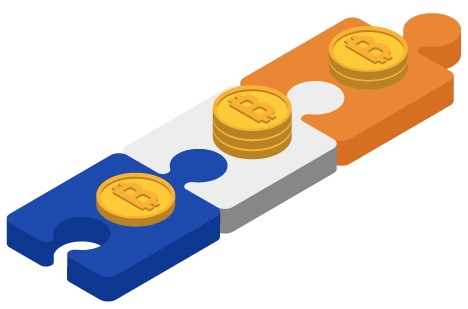
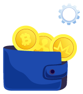
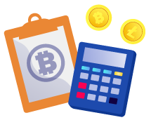
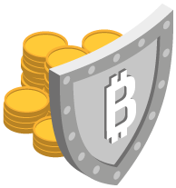
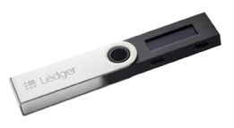
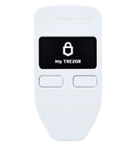
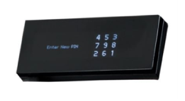
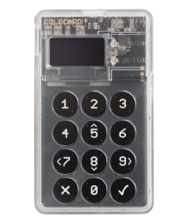
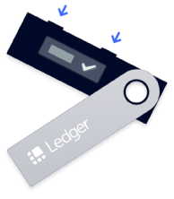

Hardware Wallets – Cryptocurrencies Joining the Physical World
The crypto hardware wallet isn’t a new concept. In fact, this type of device owns a large market share and is perhaps on track to becoming mandatory, or at least the best solution, for all cryptocurrency users.
The first wallet was introduced back in 2011. The Trezor One, developed in Prague, heralded a revolutionary leap in security and how cryptocurrency transactions were handled on a global scale.
Today, there’s more than just one gadget on which you can store your cryptocurrencies. Therefore, it’s important to understand how each one works and the advantages and disadvantages before deciding on the right one.
Understanding the Hardware Wallet
A crypto hardware wallet almost always comes in the form of a USB device. But unlike your traditional USB device, this type of gadget is often the first choice for experienced crypto traders.
Its usefulness is evident when discussing the need to store digital assets, which cryptocurrencies are, in an offline medium with better security options.
How a Hardware Wallet Works

A hardware wallet provides protection to the user’s digital funds by keeping their private keys on a secure device. Unlike traditional crypto wallets which are entirely software-based, a hardware wallet, or cold storage wallet, stores private keys offline.
This means that unless the user is using the wallet to check their balance or make cryptocurrency transactions, the user’s keys are anonymous or private. Only when they use the wallet to generate a key, can a transaction be authenticated online.
Furthermore, in order to gain access to the private key, most hardware wallets will ask for a PIN code. Once the user authenticates themselves on the device, the wallet will then use a random number generator to create private keys so that the user can send, exchange, buy, or sell various cryptocurrencies.
Cryptocurrencies Supported by Hardware Wallets
Unlike some software wallets, hardware wallets were designed to be more versatile and accessible to a wider user base. However, this doesn’t mean that all cryptocurrencies will have hardware storage support.
Usually, only the more popular cryptocurrencies, or the most expensive, have support. Here’s a list of the cryptocurrencies you shouldn’t have trouble storing on a hardware wallet:
- Bitcoin
- Ethereum
- Litecoin
- Monero
- Bitcoin Cash
- Ripple
Hardware Wallet vs. Digital Wallet
The big debate between smaller investors is whether a cold storage option is preferable over digital wallets or hot storage.
Key Differences
Digital wallets come in two forms. They can be accessed via the web browser or installed locally on the user’s computer or mobile device. Therefore, one of the main differences between how you can store your bitcoins online as opposed to physically is noticeable in trading options and user input.
In order to trade cryptocurrency from your crypto hardware wallet, you have to plug in your device, enter the PIN and any other passphrases in order to access your digital funds. This means that while your device is inactive there can be no automatic trading done to and from the addresses stored on that device.
Digital wallets, on the other hand, may allow various types of automated trading options. This means that you can sell or buy cryptocurrencies at desirable rates, even when you’re not actively monitoring your account.
Another big difference comes in the design. Hardware wallets, like any other offline electronic gadgets, are much tougher to interfere with. Thus, hackers have a harder time accessing them.
Digital wallets, especially those operated fully over the web, like in the case of crypto exchanges, are susceptible to hacks. Although the databases that store this information tend to be quite secure, there have been many intrusions over the years. Many of which resulted in people losing large amounts of bitcoins.
Digital Wallets Pros and Cons
There are many advantages to using a digital wallet as opposed to a physical wallet. First of all, there are rarely any costs involved in creating a digital wallet. Most of software is free (Bitamp.com) and provided either by third parties or by the crypto exchanges themselves.
Even paid digital wallets are considerably less expensive than hardware wallets. In addition, software wallets also come with user interfaces that make the trading process easier. Even for less tech-savvy users.
And, last but not least, with a software wallet, both funds and private keys are usually one click away. Because there’s no need to plug in any device or go through various security layers.
The biggest disadvantage is that keys are mostly stored over the internet. Because of this, any intrusion into the database or on your local machine, could grant someone access to your keys and cryptocurrency.
Another issue with some software wallets is that they can favour a particular crypto coin.
Hardware Wallets Pros and Cons

A very convenient fact is that you don’t have to own the best hardware wallet in order to store, and trade multiple cryptocurrencies. They were designed for convenience, in this sense.
Because a hardware wallet has many in-built defensive layers, it’s virtually impregnable to hackers. First of all, because the gadget is likely to be offline most of the time. Secondly, because even when connected to an infected computer, the device doesn’t allow malware-type applications to infect it.
Security is the main advantage. And, even though there are probably more disadvantages, in terms of convenience, the crypto hardware wallet’s superior security protocols often outweigh them all.
What are the cons of using a bitcoin hardware wallet or any other cold storage device? As already mentioned, every trade will require the device to be switched on. So, it may be tougher to actively invest in crypto on a daily basis.
The costs are also high, especially for someone that doesn’t plan on investing too much in crypto. So far, the majority of investors or bitcoin owners that use hardware wallets are those that make large transactions.
Can You Link a Bitcoin Hardware Wallet to a Software Wallet?
Yes. Hardware wallets provide only as much security as the user demands. In order to facilitate some trading automation and to make it easier on the users to actively trade on different exchanges, some hardware wallets allow pairing with certain trusted software wallets.
For example, Electrum, which is one of the premier software wallets, allows pairing with some of the more popular hardware wallets like the Ledger or Trezor wallets.
Are There Security Risks with a Hardware Wallet?

There are always risks involved, even when using a crypto hardware wallet. Most of the concerns arise in the form of bad software implementation of the random number generators. Others have voiced concerns regarding bad hardware or vulnerable hardware.
It’s not inconceivable to think that some malicious backdoors into these hardware devices can be installed, if the devices were intercepted after they leave the factory.
The good news is that since the first hardware wallet was introduced in 2011, there have been no reports of hacked wallets, funds disappearing, or even stolen wallets that have been compromised. However, just because the concept’s track record is clean so far, it doesn’t mean that there isn’t more than one contender for the best hardware wallet crown.
It is also debatable whether additional communication options on hardware wallets would constitute grounds for security concerns. For example, the Ledger Nano X has all the great features of its predecessor, the Nano S. However, this wallet also features Bluetooth connectivity.
Therefore, it may not be as easy to keep the device offline and out of reach of hackers all the time. Or at least not as easy as advertised.
Best Hardware Wallet – Top 3 Options
Because Bitcoin is still the most valuable crypto coin, and this is unlikely to change anytime soon, here are some of the wallets that are actively competing for the best bitcoin hardware wallet crown. As you’ll see, there can be great differences between the best hardware wallet and an average cold storage or hot storage option.
Ledger Nano S

The Ledger Nano S is a tiny computer with a unique operating system called BOLOS. When it comes to power and connectivity, it works like most USB devices. It offers true support for 15 crypto coins, including Bitcoin, Bitcoin Cash, Ethereum, Litecoin, Ripple, Dash, and other popular alternatives.
The true support, or full support, means that very few coins will require pairing with a dedicated software wallet. The device also features a digital display for recover phrases and seeds. As well as displaying the traded amount as the intended address.
While the Nano S has a smaller display, it offers great visibility from all angles. As far as pricing is concerned, the Nano S isn’t more expensive than many other alternatives. In addition, it also has a superior build quality.
The Nano S is compatible with many independent wallet apps with the exception of MyTrezor and MultiBit HD. In terms of security, it allows recovery seeds, PIN code, and passphrase certification, along with one of the best chips.
On top of all that, the Nano S has been the number one choice in the UK for a long time. And it’s not losing any ground, even against its newer version the Nano X.
Trezor

For a long time, the Trezor wallet was the best bitcoin hardware wallet by far. It wasn’t just good but also the first wallet of its kind. Therefore, it took the competition a while to catch up. The Trezor device has a larger display and a plastic body.
Although not as physically durable as other cold storage options, the device itself offers impressive security for private keys. It’s also very easy to use due to the two buttons having more separation than on other USB wallet devices.
The Trezor comes with a PIN code, recovery seed, passphrase, and a fairly secretive chip. Unlike other manufacturers that praise their hardware wallet chips, with Trezor, everything is hush-hush.
That said, I already pointed out that the chip in the device has nothing that would support Bluetooth, NFC, or a fingerprint reader. Thus, there are very few methods of communication with the device, aside from the USB cable.
Trezor wallets also support most of the more valuable crypto coins. However, there isn’t as much full support as is the case with other wallets. So, apps such as MyEtherWallet, Mycelium, Greenbits, and others might be necessary when trading alternative crypto coins.
Since it does offer full support for bitcoin, it’s still regarded by many as the best bitcoin hardware wallet. This, and because it has a friendlier user interface.
Keepkey

KeepKey is a wallet with native support for the most popular crypto coins, including Bitcoin, Bitcoin Cash, Ethereum, Litecoin, and Bitcoin Gold. It’s very convenient to use as it doesn’t require pairing with third party apps in order to complete transactions in multiple currencies.
However, the cryptocurrency support is considerably lower than that of other well-established hardware wallets. One of the most impressive features of this best hardware wallet title contender is its PIN protection.
Some wallets only allow four digit PINs. KeepKey, on the other hand, allows more digits and encourages users to use very long PIN codes in order to improve the layer of security. In addition, it also uses a unique feature called Recovery Cipher.
This is used to scramble words in order to protect addresses, keys, and passphrases from computers infected with malware. The user-friendly design and large LCD display make it a very appealing choice. Along with the aluminium backplate build.
Unfortunately, KeepKey is limited to Google Chrome as a browser. And, even if it has a very accessible price point, the device is considerably larger and lacks a Lock feature to prevent a third party from accessing the device, if it gets stolen while unlocked.
Coldcard

Are you only interested in Bitcoin transactions? If that’s the case, then the Coldcard may actually be the best bitcoin hardware wallet. At least from a security standpoint.
This wallet doesn’t look like the best hardware wallet, more like an old calculator with a very small screen. It’s considerably cheaper than other models and doesn’t have much quality of life features.
With that in mind, this is one of the few wallets that can be used completely offline. As in, you don’t even have to connect it to a computer to use it. Furthermore, the wallet can be backed up on a standard MicroSD card.
But just because it looks simplistic doesn’t mean it’s not a complex device. Actually, it’s not as beginner-friendly as most popular wallets on the market. And, it offers support just for Bitcoin and Litecoin. Not even Ethereum made the cut.
All things considered, not having to use the device on your personal computer means that it’s impossible for anyone to steal your private keys remotely. Whereas with other wallets, there may still be some concerns regarding physical intrusions.
Hardware Wallets vs. Digital Wallets – Final Thoughts

If you’re looking for the best bitcoin hardware wallet, you’re on the right track. For a few years now, the best ways to safeguard your cryptocurrency funds and ensure secure transactions has been using the best wallet that you can afford.
The great news is that most wallets are fairly similarly priced. As such, the best hardware wallet isn’t a race to the best price vs. performance rating. Rather, which wallet supports the most currencies.
So far, the Ledger Nano S is certainly the first thing that comes to mind when discussing the best bitcoin hardware wallet, or crypto cold storage in general. Its support for a long list of crypto coins without the need for pairing with individual digital wallets makes it highly convenient to use.